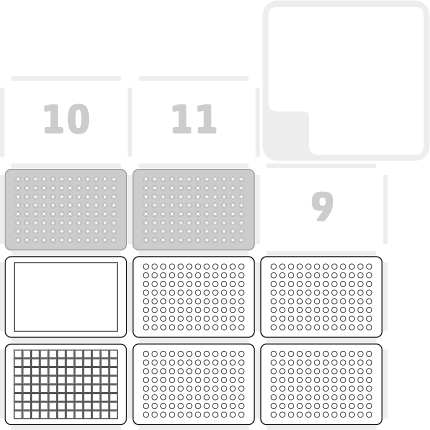

Felipe Xavier Buson
12 March 2024
OP_PY_001 v1.0
Glycerol stocks from 96-well cultures
Description
This protocol creates glycerol stocks on a 96-well plate format out of cultures on a 96-deepwell plate.
Refer to our tutorial for simulating and ammending python protocols
Labware and Liquids

- Right mount: An 8-channel p300 pipette
- Slot 1: Plate with bacterial cultures (96-deepwell, 0,5mL per well)
- Slot 4: Reservoir with 50% glycerol
- Slot 7: Tiprack for p300
- Slot 2, 3, 5 and 6: Destination plates
Execution
- Before importing the protocol in your Opentrons app, open the file and look for the line "cols_no = 0". Change the number to your desired number of columns used for this protocol
- Import the protocol into your Opentrons app
- Set up the deck as described above
- Run the protocol
Script
Glycerol stocks from 96-well cultures
Tips and best practices
Monitor the robot for the first few time you run this protocol